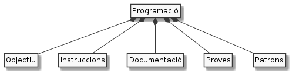

Elements bàsics de la programació¶
Malgrat molta gent pensa que la programació és quelcom molt complicat, en realitat es tracta de saber jugar amb un conjunt relativament reduït de conceptes bàsics.

Potser t’ajuda la idea de la formació de siluetes mitjançant les peces d’un tangram
Bàsicament, el joc del Tangram es basa en una silueta objectiu més un conjunt de peces amb les que conformar la silueta. La gràcia està en ser capaç de combinar aquestes peces en diferents posicions fins a aconseguir l’objectiu.
En aquest joc són tan importants les peces com l’objectiu. Evidentment, si et falta alguna de les peces necessàries per construir la figura, no la aconseguiràs. De la mateixa manera, si no tens clara la figura a construir, probablement pots passar-te una bona estona combinant peces i gaudint del que surti, però el que estaràs fent no serà ben be jugar al Tangram.
Si bé, algunes figures del Tangram poden arribar a ser molt complexes i requerir-nos estona per descobrir-les, aviat veurem que els programes són un joc una mica més complex. Amb tot, la programació comparteix en certa mesura les característiques del joc del Tangram: ens cal un objectiu –allò que volem que faci el programa– i un conjunt de peces –codi: estructures i elements de programació que estem a punt de descobrir.
Una diferència important és que en programació les peces es poden repetir tants cops com et calguin, i no cal que les facis servir totes. A aquesta part del curs, aprendrem a reconèixer i utilitzar les peces bàsiques de la programació.
En quant a l’objectiu, bé, en trobaràs un bon grapat en forma d’enunciats d’exercicis.
Hi ha un element important que al joc del Tangram queda amagat per obvi: saber si has aconseguit l’objectiu. En el cas del Tangram ho saps perquè veus o no la figura resultant i si et sobren o no peces. En programació, saber si hem aconseguit o no l’objectiu sol ser tan obvi i, per tant, ens caldrà realitzar comprovacions sovint més sofisticades que una simple ullada. D’això en direm proves o tests.
Un altre element que no explicitem al Tangram és indicar quina és la figura que hem construït. En teoria la mateixa figura ja ho diu, oi? Ja veurem que saber què fan els programes no sempre serà tan evident. Per salut mental, els desenvolupadors hem aprés que cal documentar adequadament els nostres programes, de manera que, quan els vulguem revisar (cosa molt normal) puguem entendre’l.
Una de les coses que aprens a mida que vas jugant al Tangram és a detectar patrons, és a dir, combinacions que has vist prèviament que fan determinades formes parcials què, combinades entre si, permeten generar figures més complexes. El curs persegueix facilitar-te el descobriment d’aquests patrons.

Amb tot això en ment, comencem!